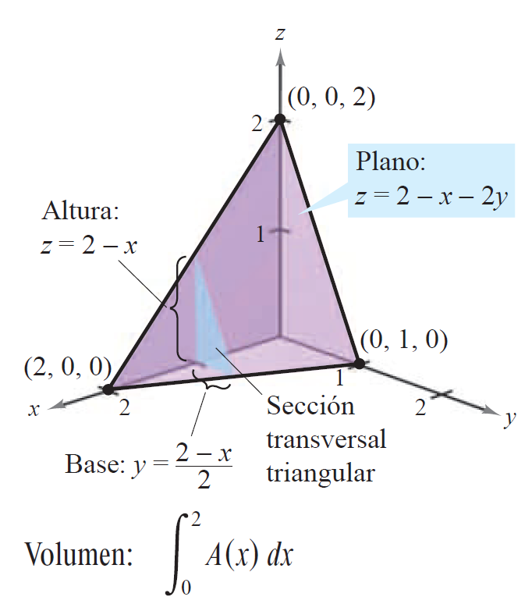
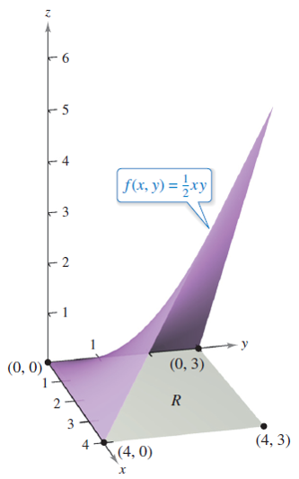

Integración con Python
Contents
5.7. Integración con Python#
Esta sección pretende ser un compendio (esperemos que claro y ordenado) de todo el Python
que hemos ido usando en el Capítulo 4.
Esta sección también puede servir como repaso de los conceptos más aplicados que hemos introducido en dicho capítulo.
5.7.1. Integrales iteradas con Sympy#
Mostramos, sobre un ejemplo, el cálculo de integrales iteradas con la ayuda de Sympy.
En este caso vamos a calcular la integral
Lo haremos de dos maneras diferentes:
integrando primero respecto a \(y\) y luego respecto a \(x\),
integrando primero respecto a \(x\) y luego respecto a \(y\).
import sympy as sp
x, y = sp.symbols('x y', real=True) # define as variables simbólicas x, y
f_expr = 2*x*y + 3*y**2
f = sp.Lambda((x,y), f_expr)
res1 = sp.integrate(f_expr, (y, 1, x), (x, 1, 2))
display(res1)
res2 = sp.integrate(f(x,y), (y, 1, x), (x, 1, 2))
display(res2)
5.7.2. Cálculo del área de una superficie utilizando ’ Sympy’#
En este caso, debemos integrar la función \(1\) en la región de que se trate.
Como ejemplo, vamos a calcular la superficie de la región que mostramos a continuación:

import sympy as sp
x, y = sp.symbols('x y', real=True) # define as variables simbólicas x, y
# res = sp.integrate(1, (y, sp.cos(x), sp.sin(x)), (x, 1, 2))
res = sp.integrate(1, (y, 0, sp.sin(x)), (x, 1, 2))
display(res)
display(sp.N(res))
5.7.3. Cálculo de volúmenes con ’ Sympy’#
Para calcular el volumen entre el plano \(XY\) y el gráfico de una función positiva, debemos integrar esa función en el dominio correspondiente.
Como ejemplo, vamos a calcular (de dos maneras distintas, según el orden elegido para las variables) el volumen de la región sólida delimitada por el plano \(z=f(x,y)=2–x–2y\) y los tres planos de coordenadas
{kind=link}
import sympy as sp
x, y = sp.symbols('x y', real=True)
f = sp.Lambda((x,y),2-x-2*y)
volumen = sp.integrate(f(x,y), (y, 0, (2-x)/2), (x, 0, 2))
display(volumen)
volumen2 = sp.integrate(f(x,y), (x, 0, 2-2*y), (y, 0, 1))
display(volumen2)
5.7.4. Cálculo del valor medio con ’ Sympy’#
Si queremos calcular el valor medio de una función de dos variables en una región plana, \(R\), debemos aplicar la fórmula
Calculamos a continuación el valor medio de \(f(x,y)=\dfrac{1}{2}xy\) sobre la región del plano \(R\) dada por un rectángulo con vértices \((0,0)\), \((4,0)\), \((4,3)\) y \((0,3)\). Para ello, observamos que el área de la región rectangular \(R\) es \(4\times 3=12\), y que los límites para \(x\) e \(y\) son \(0\leq x\leq 4\) e \(0\leq y\leq 3\), como se muestra en la figura
{kind=link}
import sympy as sp
x, y = sp.symbols('x y', real=True)
f = sp.Lambda((x,y),1/12*1/2*x*y)
val_m = sp.integrate(f(x,y), (y, 0, 3), (x, 0, 4))
display(val_m)
5.7.5. Integración con cambio de variable en Sympy#
Para realizar un cambio de variable debemos aplicar la fórmula
Como ejemplo, vamos a integrar \(\displaystyle \int_R \int 9xy \, dA\), siendo \(R\) la región que mostramos en la siguiente figura

Consideramos el siguiente cambio de variable:
import sympy as sp
x, y, u, v = sp.symbols('x y u v', real=True) # define las variables simbólicas x, y, u, v
# Definimos las funciones F y G como matrices
F = sp.Matrix([ 1/3*(2*u+v), 1/3*(u-v) ])
G = sp.Matrix([ 9*x*y ])
# Definimos la nueva función a integrar
GoF_expr = G.subs(x,1/3*(2*u+v)).subs(y,1/3*(u-v))
# Calculamos el determinante de la matriz jacobiana asociada a F
det_jac_F = sp.det( F.jacobian([u,v]) )
# Calculamos la integral sobre la nueva región de integración
res = sp.integrate(GoF_expr*abs(det_jac_F), (v, -4, 0), (u, 1, 4))
display('Valor de la integral: ')
display(sp.simplify(res[0]))
'Valor de la integral: '
5.7.6. Integración con cambio a polares con ’ Sympy’#
Como caso particular de especial interés, al cambiar de coordenadas cartesianas a polares, la fórmula anterior resulta
Vamos a aplicarlo a un ejemplo concreto, en el que calcularemos la integral \(\displaystyle \int_R \int (x^2 + y) \, dA\), siendo \(R\) la región anular mostrada en la siguiente figura:
{kind=link}
import sympy as sp
x, y, r, th = sp.symbols('x y r th', real=True) # define las variables simbólicas x, y, r, th
# Definimos las funciones F y G como matrices
F = sp.Matrix([ r*sp.cos(th), r*sp.sin(th) ])
G = sp.Matrix([ x**2 + y ])
# Definimos la nueva función a integrar
GoF_expr = G.subs(x,r*sp.cos(th)).subs(y,r*sp.sin(th))
# Calculamos el determinante de la matriz jacobiana asociada a F
det_jac_F = sp.det( F.jacobian([r,th]) )
# Calculamos la integral sobre la nueva región de integración
res = sp.integrate(GoF_expr*abs(det_jac_F), (r, 1, sp.sqrt(5)), (th, 0, 2*sp.pi))
display('Valor de la integral: ')
display(sp.simplify(res[0]))
'Valor de la integral: '